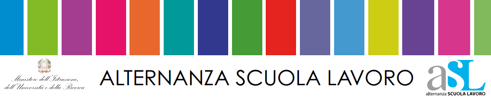

Questo sito è stato realizzato per il portfolio delle attività di alternanza scuola lavoro compiute nel corso del triennio.
Originariamente è stato creato da zero in HTML e CSS per un progetto di tepsit in terza superiore (a.s. 2016-2017)
da me e il mio compagno Serafino Niccolò. L'ho recuperato per dare continuità al lavoro svolto l'annno
precedente,
aggiungendo le nuove conoscienze acquisite, ampliando
quindi le funzionalità del sito e rendendolo ancora più immediato ed intuitivo.
portfolio di Napolitano Daniele